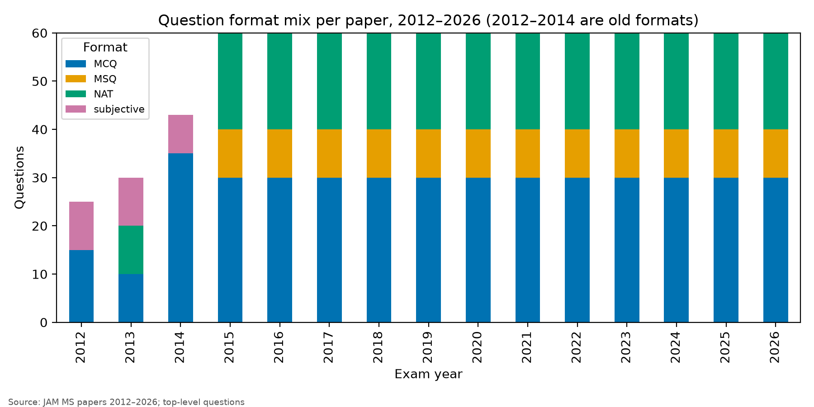
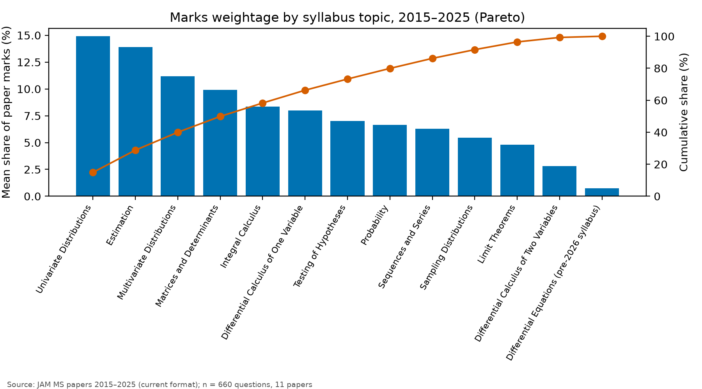
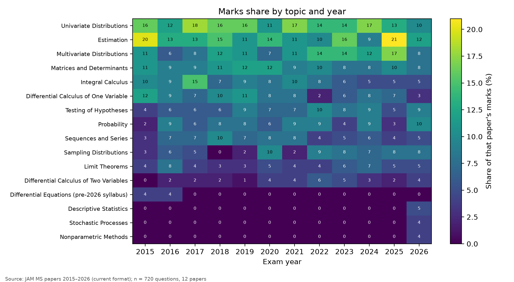
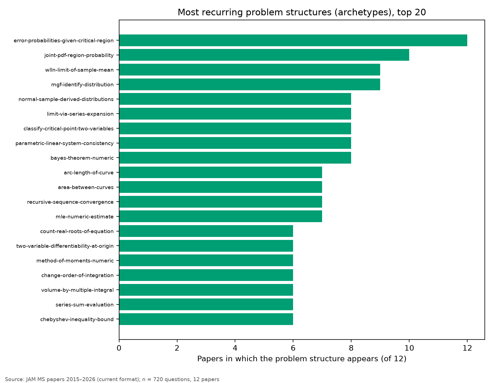
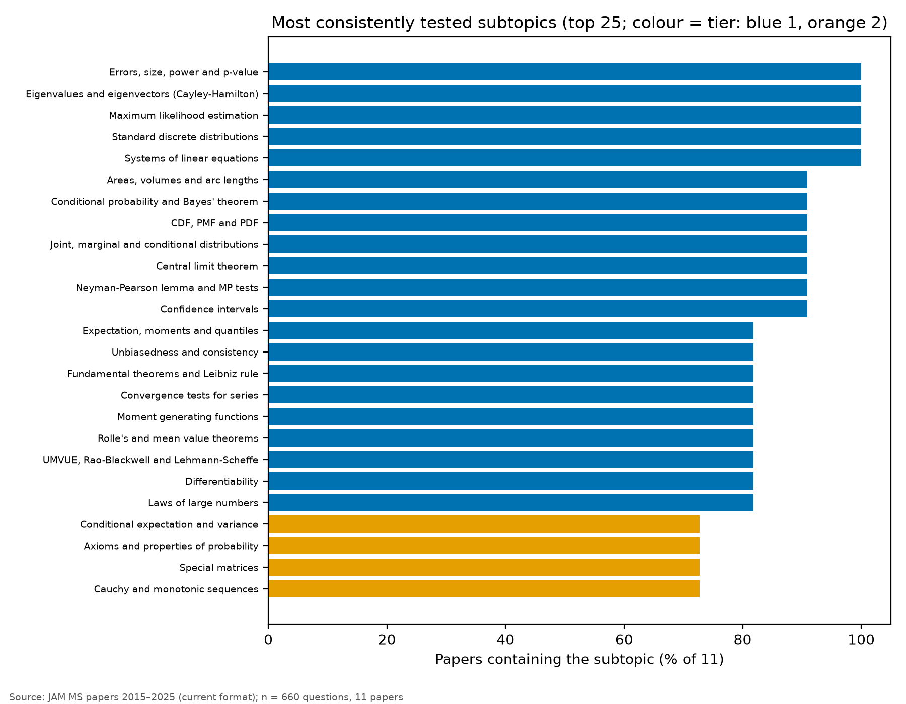

Scope: 11 current-format papers (2015–2025, 60 questions / 100 marks each), 660 questions. Old-format papers 2012–2014 are reported separately. Taxonomy: official JAM 2026 MS syllabus (plus a pre-2026 Differential Equations topic). Evidence tags: strong = seen in nearly every paper; moderate = consistent but small or recent; weak = few observations.
Format since 2015: 30 MCQ (Section A), 10 MSQ (B), 20 NAT (C); 10+20 one/two-mark MCQs, two-mark MSQs, 10+10 one/two-mark NATs. Question styles: numerical 47.1%, application 23.9%, conceptual 22.4%, everything else 6.5% (subjective labels).

Marks share is the average over papers of (topic marks ÷ 100), so every paper counts equally. Frequency, weightage and consistency are separate columns.
| Subject | Topic | Questions | Papers (of 11) | Mean marks share | Questions 2023–2025 | Problem structures |
|---|---|---|---|---|---|---|
| Statistics | Univariate Distributions | 103 | 11 | 14.9% | 27 | 55 |
| Statistics | Estimation | 87 | 11 | 13.9% | 26 | 40 |
| Statistics | Multivariate Distributions | 70 | 11 | 11.2% | 23 | 41 |
| Mathematics | Matrices and Determinants | 66 | 11 | 9.9% | 16 | 41 |
| Mathematics | Integral Calculus | 56 | 11 | 8.4% | 9 | 22 |
| Mathematics | Differential Calculus of One Variable | 52 | 11 | 8.0% | 12 | 32 |
| Statistics | Testing of Hypotheses | 45 | 11 | 7.0% | 14 | 16 |
| Statistics | Probability | 45 | 11 | 6.6% | 10 | 25 |
| Mathematics | Sequences and Series | 45 | 11 | 6.3% | 10 | 20 |
| Statistics | Sampling Distributions | 37 | 10 | 5.5% | 15 | 19 |
| Statistics | Limit Theorems | 33 | 11 | 4.8% | 12 | 18 |
| Mathematics | Differential Calculus of Two Variables | 17 | 10 | 2.8% | 6 | 5 |
| Mathematics | Differential Equations (pre-2026 syllabus) | 4 | 2 | 0.7% | 0 | 1 |

Average marks share, first four vs last three papers (descriptive only; with 11 papers no trend test is meaningful):

An archetype is a problem structure (e.g. "find error probabilities for a given critical region"). The most recurrent, by number of papers they appear in:
| Topic | Archetype | Papers | Questions | Examples |
|---|---|---|---|---|
| Testing of Hypotheses | error-probabilities-given-critical-region | 11 | 15 | 2015-MS-Q18, 2015-MS-Q3, 2016-MS-Q20, 2017-MS-Q21 |
| Multivariate Distributions | joint-pdf-region-probability | 9 | 10 | 2015-MS-Q12, 2016-MS-Q43, 2017-MS-Q15, 2019-MS-Q25 |
| Differential Calculus of One Variable | limit-via-series-expansion | 8 | 9 | 2016-MS-Q33, 2017-MS-Q27, 2019-MS-Q51, 2020-MS-Q13 |
| Limit Theorems | wlln-limit-of-sample-mean | 8 | 8 | 2016-MS-Q9, 2017-MS-Q17, 2018-MS-Q49, 2019-MS-Q8 |
| Univariate Distributions | mgf-identify-distribution | 8 | 8 | 2016-MS-Q5, 2017-MS-Q6, 2018-MS-Q20, 2020-MS-Q55 |
| Sampling Distributions | normal-sample-derived-distributions | 7 | 12 | 2016-MS-Q18, 2016-MS-Q41, 2017-MS-Q16, 2017-MS-Q46 |
| Integral Calculus | arc-length-of-curve | 7 | 8 | 2015-MS-Q57, 2016-MS-Q50, 2017-MS-Q30, 2017-MS-Q53 |
| Differential Calculus of Two Variables | classify-critical-point-two-variables | 7 | 7 | 2016-MS-Q27, 2017-MS-Q25, 2019-MS-Q2, 2020-MS-Q32 |
| Estimation | mle-numeric-estimate | 7 | 7 | 2017-MS-Q18, 2018-MS-Q8, 2019-MS-Q27, 2020-MS-Q49 |
| Matrices and Determinants | parametric-linear-system-consistency | 7 | 7 | 2015-MS-Q58, 2016-MS-Q31, 2020-MS-Q4, 2021-MS-Q28 |

Rule, applied mechanically: Tier 1 if the subtopic appears in ≥ 80% of papers or averages ≥ 2% of marks; Tier 3 if it appears in < 40% of papers and averages < 1%; else Tier 2. Thresholds sit near the subtopic quartiles; they are a judgement, disclosed here. Counts: Tier 1 = 22, Tier 2 = 32, Tier 3 = 13, untested = 11. Tier 3 is "lower historical priority", never "skip".
| Topic | Subtopic | Questions | Papers (of 11) | Mean marks share |
|---|---|---|---|---|
| Integral Calculus | Areas, volumes and arc lengths | 24 | 10 | 3.5% |
| Univariate Distributions | Expectation, moments and quantiles | 23 | 9 | 3.4% |
| Testing of Hypotheses | Errors, size, power and p-value | 22 | 11 | 3.4% |
| Matrices and Determinants | Eigenvalues and eigenvectors (Cayley-Hamilton) | 22 | 11 | 3.3% |
| Univariate Distributions | CDF, PMF and PDF | 20 | 10 | 3.1% |
| Probability | Conditional probability and Bayes' theorem | 21 | 10 | 3.0% |
| Multivariate Distributions | Joint, marginal and conditional distributions | 19 | 10 | 3.0% |
| Estimation | Maximum likelihood estimation | 19 | 11 | 2.9% |
| Univariate Distributions | Standard discrete distributions | 18 | 11 | 2.7% |
| Limit Theorems | Central limit theorem | 17 | 10 | 2.6% |
| Estimation | Unbiasedness and consistency | 17 | 9 | 2.6% |
| Integral Calculus | Fundamental theorems and Leibniz rule | 16 | 9 | 2.4% |
| Sequences and Series | Convergence tests for series | 14 | 9 | 2.4% |
| Matrices and Determinants | Systems of linear equations | 14 | 11 | 2.4% |
| Multivariate Distributions | Covariance, correlation and joint moments | 14 | 7 | 2.2% |
| Testing of Hypotheses | Neyman-Pearson lemma and MP tests | 14 | 10 | 2.2% |
| Differential Calculus of One Variable | Rolle's and mean value theorems | 12 | 9 | 2.0% |
| Estimation | UMVUE, Rao-Blackwell and Lehmann-Scheffe | 12 | 9 | 1.9% |
| Estimation | Confidence intervals | 11 | 10 | 1.8% |
| Univariate Distributions | Moment generating functions | 13 | 9 | 1.7% |
| Differential Calculus of One Variable | Differentiability | 12 | 9 | 1.6% |
| Limit Theorems | Laws of large numbers | 11 | 9 | 1.5% |

Full tier list for all 78 subtopics: outputs/tables/subtopics_2015_2025.csv.
Historical frequency is not a probability of appearance. No probabilities are given because 11 papers cannot support a defensible model.
Suggested allocation (interpretation): 90% of study time in proportion to historical marks share, and a reserved 10% for the 11 untested 2026-syllabus subtopics. Don't drop any syllabus topic for low frequency.
| Topic | Suggested study time |
|---|---|
| Univariate Distributions | 13.5% |
| Estimation | 12.6% |
| Multivariate Distributions | 10.1% |
| Matrices and Determinants | 9.0% |
| Integral Calculus | 7.6% |
| Differential Calculus of One Variable | 7.3% |
| Testing of Hypotheses | 6.3% |
| Probability | 6.0% |
| Sequences and Series | 5.7% |
| Sampling Distributions | 4.9% |
| Limit Theorems | 4.4% |
| Differential Calculus of Two Variables | 2.6% |
2012 (25 questions, 300 marks, subjective parts), 2013 (30 questions: objective, fill-in-the-blank, descriptive) and 2014 (43 questions incl. 8 descriptive) differ in structure, so they are kept out of all shares above. Heaviest topics there:
| Topic | Questions | Mean marks share |
|---|---|---|
| Estimation | 13 | 16.0% |
| Univariate Distributions | 15 | 14.7% |
| Multivariate Distributions | 9 | 10.7% |
| Matrices and Determinants | 10 | 8.7% |
| Probability | 8 | 7.3% |
| Testing of Hypotheses | 7 | 7.3% |
python -m pyq.master && python -m pyq.report regenerates every table, figure and this report from the frozen data. Code and data: github.com/aaditya19saini/OCR-QP-Tool.